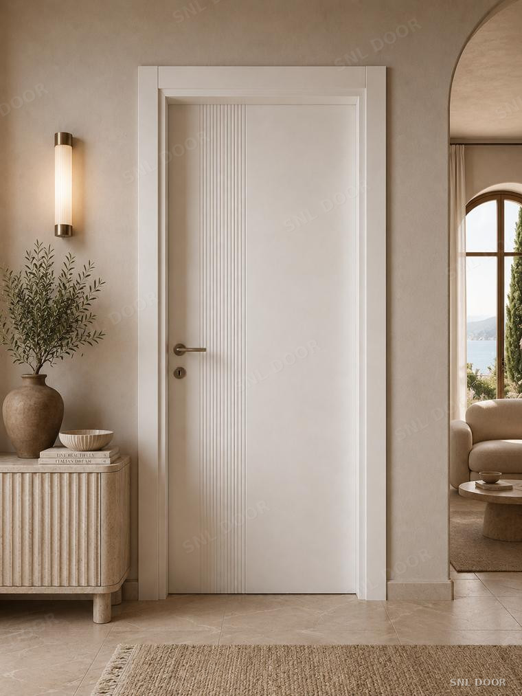
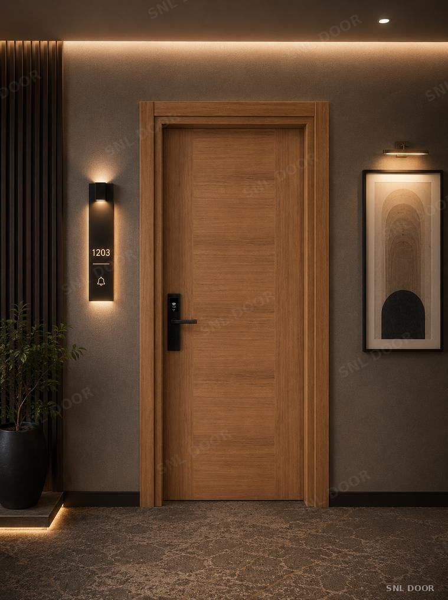
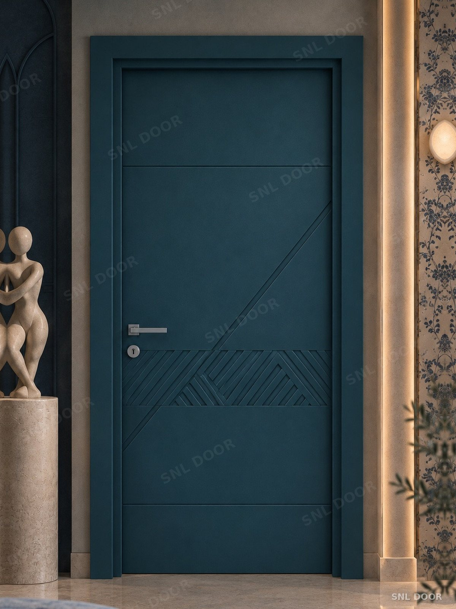
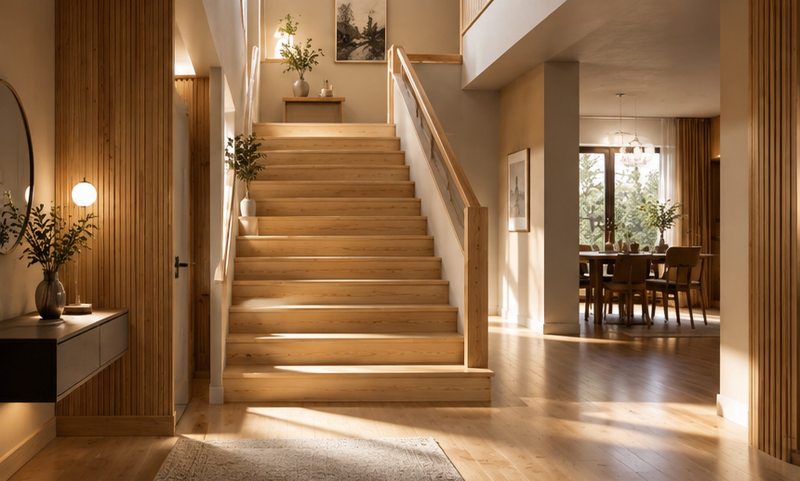

Kapı modellerimiz
Konutlardan büyük ölçekli ticari yapılara; estetik beklentileri ve teknik performans standartlarını karşılayan iç kapı koleksiyonları.

Melamin Kapılar
Melamin yüzey iç oda kapıları. Renk ve desen seçenekleriyle her projeye uygun.
İncele
Yangına Dayanımlı
Otel, yurt, hastane ve kurumsal projeler için TS EN 1634-1 sertifikalı, 30 dakika alev ve duman sızdırmazlığı sağlayan çözüm
İncele
PVC Kapılar
Yüksek nem direnci ve kolay temizlenebilir yüzey yapısı. Yoğun kullanım ve ıslak mekan gereksinimleri için uzun ömürlü üretim.
İncele
Lake Kapılar
Özel frezeleme detayları ve kusursuz yüzey bitişi. Modern mimari projeler için mat veya parlak poliüretan boya uygulamaları.
İnceleYangına dayanımlı iç oda kapıları
EI 30 · E 30Teknik kanadın dış yüzeyini oluşturan yüksek yoğunluklu levha. Yangın geciktirici melamin, poliüretan lake veya PVC yüzey seçenekleriyle yangın güvenliğini mimari tasarımla buluşturur.
Yüzey Seçenekleri
Çizilmeye dayanıklı, boyanabilir melamin kapı yüzeyleri.
Kasa, Pervaz ve Kapı Elemanları
Kapı üreticileri ve inşaat projeleri için kasa, pervaz, seren, süpürgelik ve profilleri standart ya da projeye özel ölçülerde, doğrudan entegre tesislerimizden sunuyoruz.
Masif Panel: Çam, Ladin, Kayın, Meşe
Doğal ahşaptan, istenen kalınlık ve ebatlarda masif panel üretimi. Mobilya, merdiven ve dekorasyon işleriniz için sağlam, pürüzsüz ve kullanıma hazır paneller.

Öne çıkan modeller
PVC ve melamin koleksiyonlarımızdan seçtiğimiz modeller.


Büyük Ölçekli Projeler ve Bayilik Ağı
Otel, konut ve ticari projeleriniz için teknik şartnamelere uygun üretim kapasitesi, rekabetçi çözümler ve zamanında teslimat disiplini sunuyoruz.
Neden biz?
- 01
Entegre Üretim Tesisi
Bitmiş kapıdan imalat için gereken A'dan Z'ye tüm ahşap komponentlere (kasa, pervaz, seren, profil) ve masif panele kadar tüm süreçleri kendi bünyemizde yönetiyoruz.
- 02
Kendi Preslerimizde Yüzey Üretimi
Melamin kapı yüzeylerini kendi bünyemizde presleyerek üretiyoruz. Hem kendi kapılarımızda sağlam ve kaliteli bir yüzey elde ediyor hem de üreticiler için boyanabilir ve desenli yüzey plakaları hazırlıyoruz.
- 03
EI 30 Sertifikalı Güvenlik
TS EN 1634-1 standardına uygun olarak akredite laboratuvarda test edilmiş, yangın ve duman sızdırmazlığı belgelenmiş teknik kapılar.
- 04
Titiz Kalite Kontrol Disiplini
Hammadde kabulünden hassas ebatlama ve paketlemeye kadar her adımda uygulanan denetimlerle yüksek mukavemet ve uzun ömür garantisi.
- 05
Doğrudan Üretici Çözüm Ortaklığı
Aracısız, şeffaf ve teknik odaklı iletişim. Mimari ofisler ve proje yöneticileri için doğrudan fabrika desteği ve esnek üretim kabiliyeti.